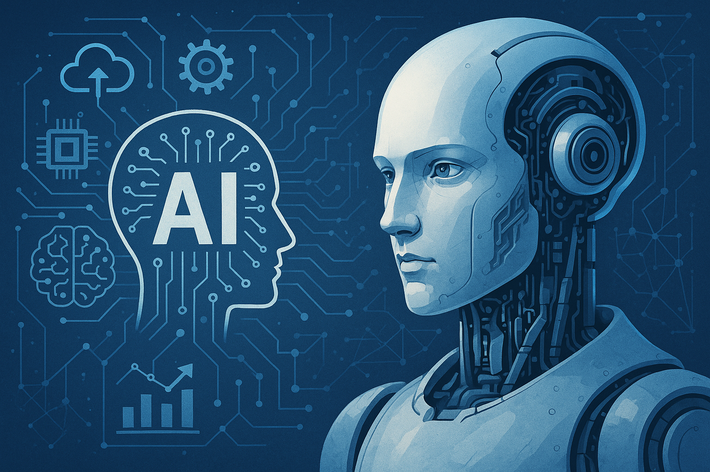

Tekoäly eilen, tänään ja huomenna
Tekoälyn historia

Tekoälyn historia juontaa juurensa jo antiikin mytologioihin, joissa esiintyi itseajattelevia olentoja. Moderni tekoälytutkimus sai kuitenkin alkunsa 1900-luvun puolivälissä, kun Alan Turing esitti kysymyksen: "Voiko kone ajatella?". 1950-luvulla kehitettiin ensimmäiset tekoälymallit, ja 1960–70-luvuilla tutkijat loivat sääntöpohjaisia järjestelmiä, jotka pystyivät ratkaisemaan monimutkaisia ongelmia tietyillä rajatuilla alueilla.
1980-luvulla neuroverkkojen ja koneoppimisen kehitys lisäsi tekoälyn tehokkuutta, mutta todellinen läpimurto tapahtui 2000-luvulla, kun laskentatehon kasvu ja suurten tietomäärien hyödyntäminen mahdollistivat syväoppimisen nousun. Tekoäly alkoi yhä enemmän muistuttaa ihmismäistä oppimista ja päätöksentekoa.
Tekoäly tänään
Tekoäly on nykyään olennainen osa jokapäiväistä elämäämme. Se toimii hakukoneiden, sosiaalisen median algoritmien, puheentunnistuksen ja automaation taustalla. Suurimmat edistysaskeleet on nähty luonnollisen kielen käsittelyssä, kuvantunnistuksessa ja ennakoivassa analytiikassa. Yritykset käyttävät tekoälyä tehokkuuden parantamiseen, asiakaspalvelun automatisointiin ja lääketieteellisten diagnoosien tarkentamiseen.
Erityisesti generatiivinen tekoäly, kuten kielimallit ja kuvageneraattorit, on mullistanut luovan alan. Tekoäly voi kirjoittaa artikkeleita, säveltää musiikkia ja luoda visuaalista taidetta. Samalla keskustelu etiikasta ja tekoälyn sääntelystä on noussut keskiöön – kuinka varmistamme tekoälyn vastuullisen käytön?

Kyberturvallisuus ja tekoäly

Tekoälyn kehitys tuo mukanaan myös uusia haasteita kyberturvallisuudelle. Tekoälyä voidaan käyttää sekä puolustuksessa että hyökkäyksessä kyberuhkia vastaan. Rikolliset voivat hyödyntää tekoälyä esimerkiksi kehittyneempien tietojenkalasteluhyökkäysten, haittaohjelmien ja väärennettyjen sisältöjen, kuten deepfake-videoiden, luomiseen.
Toisaalta tekoäly voi myös parantaa kyberturvallisuutta analysoimalla suuria tietomääriä ja tunnistamalla uhkia ennen kuin ne ehtivät aiheuttaa vahinkoa. Esimerkiksi tekoälypohjaiset järjestelmät voivat havaita poikkeavuuksia verkkoliikenteessä ja estää mahdollisia hyökkäyksiä reaaliajassa. Tekoälyn hyödyntäminen tietoturvassa edellyttää kuitenkin jatkuvaa valvontaa ja eettisiä pohdintoja, jotta sitä ei käytetä haitallisiin tarkoituksiin.
Tekoälyn tulevaisuus
Tulevaisuudessa tekoäly tulee kehittymään entistä itsenäisemmäksi ja kykenevämmäksi. Kvanttitietokoneiden yleistyminen voi tuoda mukanaan valtavan hyppäyksen laskentatehossa, mikä mahdollistaa vielä kehittyneemmät tekoälymallit.
Yksi suurimmista kysymyksistä on tekoälyn autonomian kasvu: missä määrin annamme sen tehdä päätöksiä puolestamme? Voidaanko tekoälyä käyttää laajasti esimerkiksi politiikassa, oikeusjärjestelmässä tai jopa lääketieteessä ilman ihmiskontrollia? Lisäksi kehitetään yhä enemmän tekoälyä, joka ymmärtää ihmisten tunteita ja pystyy toimimaan eettisesti kestävällä tavalla.
Tekoälyn kehityksellä on valtava potentiaali, mutta se tuo mukanaan myös haasteita, kuten työmarkkinoiden muutokset, tietoturva- ja yksityisyyskysymykset sekä tekoälyn eettiset ja juridiset rajat. Näihin haasteisiin vastaaminen määrittää, millaiseksi tekoälyn tulevaisuus muotoutuu.

Johtopäätös

Tekoäly on kehittynyt valtavasti viimeisten vuosikymmenten aikana, ja sen vaikutus yhteiskuntaan on kiistaton. Vaikka tekoäly on jo nyt merkittävä osa arkeamme, sen tulevaisuus tuo mukanaan entistä monimutkaisempia kysymyksiä ja mahdollisuuksia. Se, kuinka hyödynnämme tekoälyä viisaasti ja vastuullisesti, ratkaisee sen roolin tulevaisuuden maailmassa.
Erityisesti kyberturvallisuus tulee olemaan avainasemassa tekoälyn kehityksessä. On välttämätöntä varmistaa, että tekoälyä käytetään turvallisesti ja vastuullisesti, jotta se ei joudu vääriin käsiin tai aiheuta yhteiskunnallisia riskejä. Vain huolellisella sääntelyllä, eettisillä ohjeilla ja jatkuvalla teknologian kehittämisellä voimme taata tekoälyn hyödyttävän yhteiskuntaa ilman merkittäviä turvallisuusuhkia.